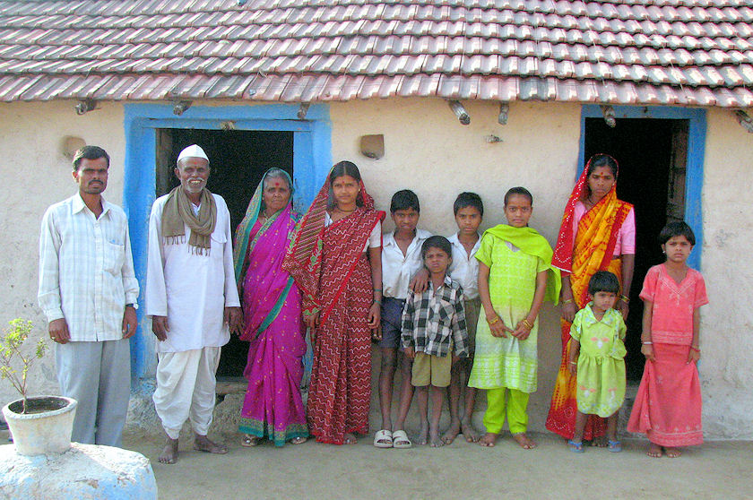

mailto:payer@payer.de
Zitierweise | cite as:
Payer, Alois <1944 - >: Sanskritkurs. -- 30. Lektion 30. -- Fassung vom 2008-12-30. -- URL: http://www.payer.de/sanskritkurs/lektion30.htm
Erstmals hier publiziert: 2008-12-21
Überarbeitungen: 2008-12-30 [Verbesserungen]
Anlass: Lehrveranstaltungen 1980 - 1984
©opyright: Dieser Text steht der Allgemeinheit zur Verfügung. Eine Verwertung in Publikationen, die über übliche Zitate hinausgeht, bedarf der ausdrücklichen Genehmigung des Verfassers
Dieser Text ist Teil der Abteilung Sanskrit von Tüpfli's Global Village Library
Falls Sie die diakritischen Zeichen nicht dargestellt bekommen, installieren Sie eine Schrift mit Diakritika wie z.B. Tahoma.
Die Devanāgarī-Zeichen sind in Unicode kodiert. Sie benötigen also eine Unicode-Devanāgarī-Schrift.
Bildung:
|
Beispiel:
क्री 9U "kaufen"
Singular Plural 3. Person Parasmaipada क्रीणाति
(krī + nā + ti)क्रीणन्ति
(krī + n + anti)3. Person Ātmanepada क्रीणीते
(krī + nī + te)क्रीणते
(krī + n + ate)
Bei dieser Präsensklasse ist besonders zu beachten die Bildung des Präsensstamms zur Wurzel ज्ञा 9U "erkennen, wissen":
Singular Plural 3. Person Parasmaipada जानाति
(jā-na-ti)जानन्ति
(jā-n-anti)3. Person Ātmanepada जानीते
(jā-nī-te)जानते
(jā-n-ate)Die Form जा die, dem Präsensstamm von ज्ञा zugrundeliegt, ist entweder durch eine Ablautreihe -ā (Tiefstufe) -nā (Hochstufe) zu erklären, oder durch Dissimilation aus *jñā-nā-ti.
Einige Wurzeln auf langen Vokal verkürzen diesen vor dem Präsensstammsuffix der 9. Klasse:
Beispiel:
पू 9U "reinigen"
Singular Plural 3. Person Parasmaipada पुनाति
(pu-nā-ti)पुनन्ति
(pu-n-anti)3. Person Ātmanepada पुनीते
(pu-nī-teपुनते
(pu-n-ate)
Bildung des Partizip Präsens Parasmaipada:
Beispiel:
क्रीणन्त् (krī + n + ant) ; fem.: क्रीणती (krī + n + at + ī)
Der Optativ wird gebraucht:
1. zur Bezeichnung
(hierbei überschneidet sich der Optativ - लिङ् - mit dem Imperativ - लोट्) |
Beispiel:
दासो ग्राममागच्छेत् = "Der Leibeigene möge ins Dorf kommen"
2. Wenn etwas als
dargestellt werden soll. |
Beispiel:
ग्रामाच्चेद्गच्छेद्गुरुं न शृणुयात् = "Wenn er aus dem Dorf ginge, würde er den Meister nicht hören"
| 3. Relativsätze mit Optativ haben manchmal die Bedeutung: "Wenn jemand ..." |
Beispiel:
यो नृतं वदेत्स नरकं पतेत् = "Wenn jemand die Unwahrheit sagen würde, würde er in die Hölle fallen = Wenn jemand Unwahrheit sagt, fällt er in die Hölle"
Der Optativ (लिङ्), das Imperfekt (लङ्), der Aorist (लुङ्), Prekativ (आशिर्लिङ्) und Konditionalis haben die sog. Sekundärendungen:
| 3. Person Singular | 3. Person Plural | |
|---|---|---|
| Parasmaipada | -t | -n athematische Klassen: -an oder -ur Optativ: -ur |
| Ātmanepada | -ta | -nta athematische Klassen: -ata (aus *nta) Optativ: -ran |
| vor konsonantische anlautenden Endungen: Präsensstamm + -i- (das mit dem -a- zu -e- verschmilzt) + Sekundärendungen vor vokalisch anlautenden Endungen: Präsensstamm + -i- (» -e-) + -y- + Sekundärendung |
Beispiele:
1. Präsensklasse:
भू
Singular Plural 3. Person Parasmaipada भवेत्
bhava + i + tभवेयुर्
bhava + i + y + ur3. Person Ātmanepada भवेत
bhava + i + taभवेरन्
bhava + i + ran
4. Präsensklasse:
नृत्
Singular Plural 3. Person Parasmaipada नृत्येत्
nṛtya + i + tनृत्येयुर्
nṛtya + i + y + ur3. Person Ātmanepada नृत्येत
nṛtya + i + taनृत्येरन्
nṛtya + i + ran
6. Präsensklasse
विश्
Singular Plural 3. Person Parasmaipada विशेत्
viśa + i + tविशेयुर्
viśa + i + y + ur3. Person Ātmanepada विशेत
viśa + i + taविशेरन्
viśa + i + ran
10. Präsensklasse und Kausative
चुर्
Singular Plural 3. Person Parasmaipada चोरयेत्
coryaya + i +tचोरयेयुर्
coraya + i + y + ur3. Person Ātmanepada चोरयेत
coraya + i + taचोरयेरन्
coraya + i + ran
| Parasmaipada: schwacher Präsensstamm + -yā- (vor -ur: -y-) + Sekundärendung Ātmanepada: schwacher Präsensstamm + -ī- + Sekundärendung |
Beispiele:
2. Präsensklasse:
द्विष्
Singular Plural 3. Person Parasmaipada द्विष्यात्
dviṣ-yā-tद्विष्युर्
dviṣ-y-ur3. Person Ātmanepada द्विषीत
dviṣ-ī-taद्विषीरन्
dviṣ-ī-ran
5. Präsensklasse
सु
Singular Plural 3. Person Parasmaipada सुनुयात्
sunu-yā-tसुनुयुर्
sunu-y-ur3. Person Ātmanepada सुन्वीत
sunu + ī + taसुन्वीरन्
sunu + ī + ran
8. Präsensklasse
तन्
Singular Plural 3. Person Parasmaipada तनुयात्
tanu-yā-tतनुयुर्
tanu-y-ur3. Person Ātmanepada तन्वीत
tanu + ī + taतन्वीरन्
tanu + ī + ranकृ
Singular Plural 3. Person Parasmaipada कुर्यात् कुर्युर् 3. Person Ātmanepada कुर्वीत कुर्वीरन्
9. Präsensklasse
क्री
Singular Plural 3. Person Parasmaipada क्रीणीयात्
krīṇī-yā-tक्रीणीयुर्
krīṇī-y-ur3. Person Ātmanepada क्रीणीत
krīṇ-ī-taक्रीणीरन्
krīṇ-ī-ran
| Außer für -ar gelten für auslautendes -r
dieselben Sandhiregeln wie für auslautendes -s. -ar vor tönenden Lauten bleibt -ar, vor r- aber fällt das -r aus und das -a- wird durch -ā- ersetzt. |
Beispiele:
भवेयुर् + च » भवेयुश्च
पुनर् + अग्निः » पुनरग्निः
पुनर् + रोदिति » पुना रोदिति
क्री 9U क्रीणाति : kaufen
Fut. क्रेष्यति
Pass. क्रीयते
PPP क्रीत
Inf. क्रेतुम्
क्री + वि 9Ā विक्रीणीते : verkaufen
Absol. विक्रीय
Abb.: क्रीणन्ति विक्रीनते च
Bundi = बुन्दी, Rajasthan = राजस्थान
[Bildquelle: earth2marsh. --
http://www.flickr.com/photos/earth2marsh/56270619/. -- Zugriff am
2008-12-21. --


 Creative
Commons Lizenz (Namensnennung, keine kommerzielle Nutzung, keine Bearbeitung)]
Creative
Commons Lizenz (Namensnennung, keine kommerzielle Nutzung, keine Bearbeitung)]
ज्ञा 9U जानाति : kennen, erkennen, wissen, verstehen
Fut. ज्ञास्यति
Pass.ज्ञायते
Kaus. ज्ञापयतिKaus. PPP ज्ञप्त / ज्ञापित
PPP ज्ञात
Inf. ज्ञातुम्davon:
ज्ञाति m.: (Bluts-)Verwandter (Verwandte sind diejenigen, die man kennt!)
ज्ञान n.: Erkenntnis, Wissen, Erkennen (bes. der "höheren" Wahrheiten in Religion und Philosophie)

Abb.: ज्ञातयः
Darewadi, Ahmed Nagar District = अहमदनगर,
Maharashtra = महाराष्ट्र
[Bildquelle: Robin Murphy / World Resources Institute. --
http://www.flickr.com/photos/worldresourcesinstitute/2555776315/. -- Zugriff
am 2008-12-21. --


 Creative
Commons Lizenz (Namensnennung, keine kommerzielle Nutzung, share alike)]
Creative
Commons Lizenz (Namensnennung, keine kommerzielle Nutzung, share alike)]
पू 9U पुनाति : reinigen
Fur. पविष्यति
Pass. पूयते
Kaus. पावयति
PPP पूत
Inf. पवितुम्
Abb.: श्रोत्राणि पुनाति
[Bildquelle: Karmalize. --
http://www.flickr.com/photos/agaylon/1799930862/. -- Zugriff am 2008-12-21.
--

 Creative
Commons Lizenz (Namensnennung, share alike)]
Creative
Commons Lizenz (Namensnennung, share alike)]
अश् 9P अश्नाति : essen, verzehren
Fut. अशिष्यति
Pass. अश्यते
Kaus. आशयति
PPP अशित
Inf. अशितुम्
Abb.: अश्नीयात्
थाली,
Südindien
[Bildquelle: Matthew Winterburn. --
http://www.flickr.com/photos/bezoire/2330831734/. -- Zugriff am 2008-12-21.
--


 Creative
Commons Lizenz (Namensnennung, keine kommerzielle Nutzung, share alike)]
Creative
Commons Lizenz (Namensnennung, keine kommerzielle Nutzung, share alike)]
प्रिय ३: lieb, liebend, freundlich
Abb.: प्रिया
[Bildquelle: Mary Wollstonecraft Shelley. --
http://www.flickr.com/photos/awflicks/3032833609/. -- Zugriff am 2008-12-21.
--

 Creative
Commons Lizenz (Namensnennung, share alike)]
Creative
Commons Lizenz (Namensnennung, share alike)]
चेत् Konjunktion: wenn; vorausgesetzt, dass (steht nie am Anfang eines Satzes)
न चेत् : wenn nicht
यदि Konjunktion: wenn
यद्यपि : wenn auch, selbst wenn, obgleich
यद्येवम् : wenn es so ist, unter diesen Umständen
पुनर् : wieder, immer wieder, zurück, noch einmal, dagegen, aber
पुनः पुनर् : immer wieder
davon:
पुनर्भव m.: Wiedergeburt
Abb.: पुनर्भवः
[Bildquelle: Wikipedia / Copyrighted to Himalayan Academy Publications, Kapaa,
Kauai, Hawaii. --
Creative Commons
Attribution ShareAlike 2.5]
जीव् 1P जीवति : leben
Fut. जीविष्यति
Pass. जीव्यते
Kaus. जीवयति
PPP जीवित : lebend
Inf. जीवितुम्davon:
जीव m./n.: Leben, individuelle Seele
सनातन ३ fem.: सनातनी : ewig, unvergänglich, beständig
A) Wandeln Sie folgende Verbalformen in die in Person, Zahl und Genus verbi entsprechende Optativformen um:
B) Überrsetzen Sie die folgenden Sätze und lösen Sie die Komposita auf Sanskrit auf:
जना आर्यसत्यानि जानीयुरिति सुगतेनार्याणां सुखाय जना धर्मं ज्ञाप्यन्ते ॥१॥
ये नरा देवान्न यजेरन्व्रतानि च न चरेयुरनृतं च वदेयुरधर्मं च कुर्युस्ते स्सुखं नाप्नुयुर्मृत्वा च नरकं पतेयुः ॥२॥
ज्ञातिरागच्छेतितीष्ट्वार्यपुत्रो ज्ञातिं दासमाययति ॥३॥
अन्नलोभाद्दुःखं जायेतेति प्राप्तज्ञानः सुफलानि नाश्नाति ॥४॥
क्रयेण च विक्रयेण च वैश्या जीवेयुरिति वैश्यधर्मः । एवं सति वैश्यपुत्राः क्रीणन्ति विक्रीणते च ॥५॥
कृतपापो नरश्चेन्नरके पापात्पूतः स्यात्पुनर्भवं गच्छेत् ॥६॥
ब्राह्मणपुत्रा वेदाध्यायांश्च स्मृत्यध्यायांश्च पुनः पुनरधीयीरन्नित्यार्यधर्मः ॥७॥
यो ब्राह्मणः शूद्रां कामयेत स सद्ब्राह्मणो न स्यात् । सद्ब्राह्मणो हि ब्राह्मणीं कामयेत ॥८॥
सत्यं ब्रूयात्प्रियं ब्रूयान्न
ब्रूयात्सत्यमप्रियम् ।
प्रियं च नानृतं ब्रूयादेष धर्मः सनातनः ॥९॥ ॥मनुस्मृति ४.१३८॥
Bestimmen und übersetzen Sie folgende Wortformen:
Zu Lektion 31